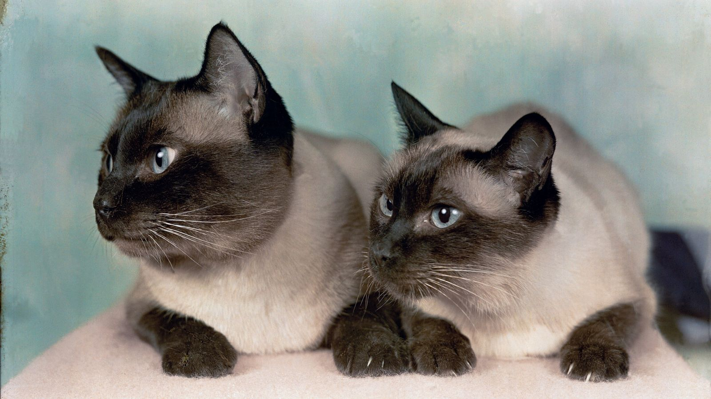
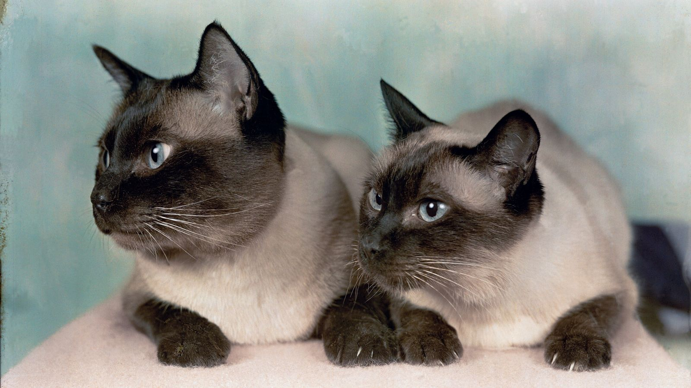

Misión
Nuestra misión es proporcionar un hogar amoroso y permanente para cada mascota necesitada, promoviendo la adopción responsable y concientizando sobre el bienestar animal.
Nuestra misión es proporcionar un hogar amoroso y permanente para cada mascota necesitada, promoviendo la adopción responsable y concientizando sobre el bienestar animal.
Fundada en [2023], nuestra organización surgió de la pasión compartida por ayudar a los animales sin hogar. Comenzamos con un pequeño grupo de voluntarios dedicados que se unieron para hacer una diferencia en la vida de las mascotas necesitadas.
Nos regimos por valores como la compasión, el respeto por la vida animal, la integridad y el compromiso con la adopción responsable. Estos valores son la base de todo lo que hacemos.
Con un equipo apasionado de voluntarios, profesionales veterinarios y amantes de los animales, trabajamos juntos para garantizar el bienestar de cada mascota bajo nuestro cuidado.
A lo largo de los años, hemos logrado [número] adopciones exitosas, hemos participado en campañas de concientización y hemos trabajado en estrecha colaboración con la comunidad para mejorar las condiciones de los animales abandonados.
Nuestro proceso de adopción está diseñado para garantizar que cada mascota encuentre el hogar adecuado. Incluye una evaluación de compatibilidad, asesoramiento preadopción y seguimiento postadopción.
Nos comprometemos a construir una comunidad consciente y compasiva mediante la participación en eventos locales, programas educativos y colaboraciones con otras organizaciones que comparten nuestra visión.
Descubre las conmovedoras historias de mascotas que encontraron amor y un hogar para siempre a través de nuestra organización.


 
